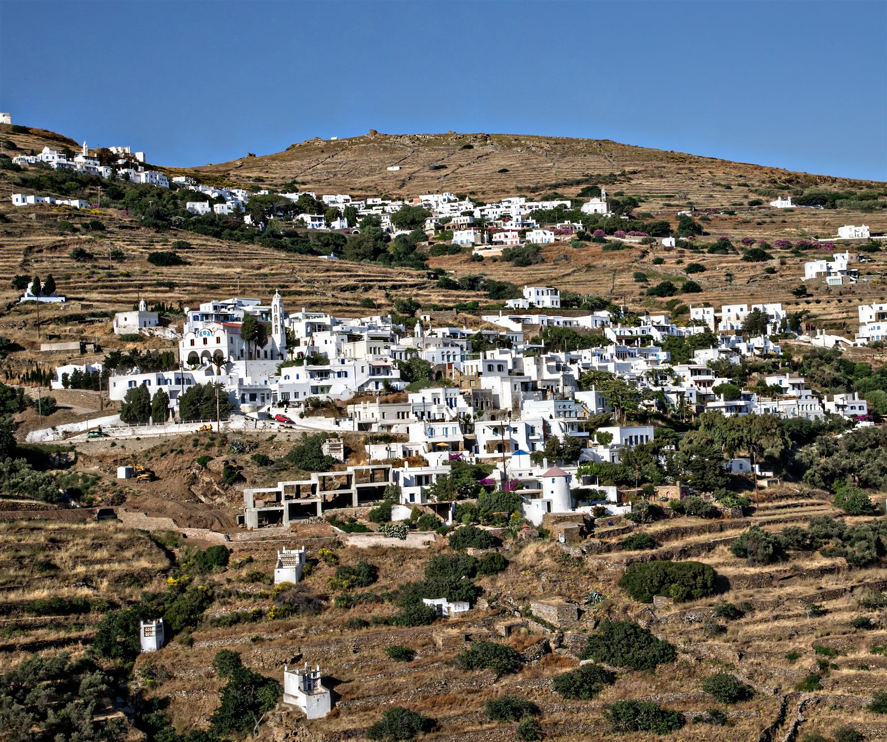

There is a stretch of weeks — roughly mid-April to early June — when Tinos is at its most generous and least crowded. The hills are still green, the sea is warm enough by late May, and the tavernas are open but unhurried.
Spring is the island showing off quietly. The terraced fields above Agios Ioannis fill with wildflowers, the footpaths are soft underfoot, and the light has that clean, washed quality you only get before the heat settles in.
From the pool you can watch the weather move across the water for hours. Mornings are for coffee and a book; afternoons for the beach five minutes below; evenings for a slow dinner on the terrace as the hills go gold.
What to do with a slow week
You do not need a plan. But if you want one: walk a different village each morning, swim in the afternoon, and let dinner take as long as it takes. The island rewards the unhurried.
- Walk the marble villages of the interior
- Swim at a different cove each day
- Find the bakery in Pyrgos
- Watch the sunset from the top of the hillside

Come in spring once and you will stop thinking of August as the season.Dinos, on-site
If you are weighing dates, this is our honest recommendation: the shoulder weeks give you the best of the island and the best of the houses, without the crowds or the heat. Book direct and we will help you plan the rest.